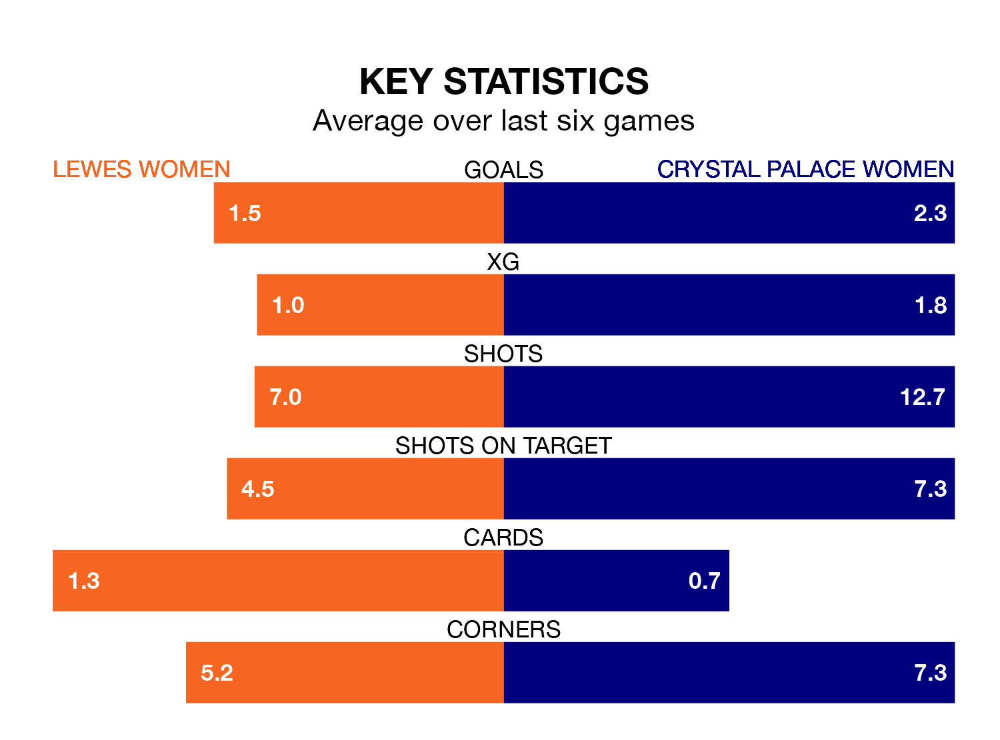

Relegation candidates Lewes Women face a challenge against high-flying Crystal Palace Women at the Dripping Pan on Sunday.
Lewes Women are 11th in the FA Women's Championship table, and have picked up four wins and four draws in their 20 games to date.
Crystal Palace, meanwhile, are top of the standings with 42 points, having won 13 and drawn three.
With 53 goals in 20 games so far this season, Crystal Palace are the league's highest scorers with 2.6 goals per game. And they are conceding fewer than average, letting in 20 goals at a rate of 1.0 per game.
Lewes, meanwhile, are below average scorers, with 1.0 goal per game, compared to a league average of 1.4. They have conceded 1.7 goals per game.
In Elise Hughes, the away side have the league's most on-form striker so far this season. She has notched 16 goals in 20 appearances.
Her goal rate of one every 113 minutes is much quicker than that of Grace Riglar, the hosts' top scorer with a goal every 239 minutes, and a total of six goals in 18 games.
In the last 10 years, Lewes and Crystal Palace have played each other on 15 occasions. Lewes won four of them, Crystal Palace eight, and they drew three times.
On average, Lewes scored 1.5 goals and Crystal Palace 1.7 in those matches.
Their last meeting was on November 12, when Crystal Palace won 3-2 at home.
Lewes are in disappointing form in the FA Women's Championship, with two wins and four losses from their last six games.
With five wins and one loss over that period, Crystal Palace's form is much better – they have taken 15 points from 18, compared to Lewes's six.
Lewes's last match was on March 31, a 2-1 loss against Southampton Women, with Riglar getting the goal for Lewes.
Crystal Palace beat Birmingham City Women 1-0 last time out, on April 14, with Hughes on the scoresheet.
Updated: 15:40 (UTC), 18/04/24